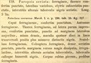

Click on images to enlarge
{kind=link}

Paropsis seriata, description
Name
Trachymela seriata (Germar, 1848)
Type specimen
Not examined.
Original description
[Original description shown in figure, translated from Latin using ChatGPT, 04/2026]
Ferruginous; pronotum closely punctate, at the sides variolose; elytra somewhat in rows punctate, with the alternate interspaces bearing black tubercles arranged in rows. Length 3 lines.
Head ferruginous, closely punctate. Antennae ferruginous. Pronotum ferruginous, at the sides slightly impressed, closely punctate, the punctures at the lateral margin larger and less dense; with four spots on the disc placed in a transverse line, more or less distinct, black. Scutellum ferruginous. Elytra ferruginous, densely punctured in rows, the punctures toward the margin more scattered and irregular; the alternate interspaces with tubercles arranged in rows, the tubercles and the humeral callus black. Body beneath pitchy, legs ferruginous. Length 3 lines (~6.4 mm)
Notes
Blackburn (1896) deals with T. seriata as part of his 'subgroup iii' (i.e., those species without "strongly marked characters", whose greatest height is not or scarcely in front of the middle of the elytral margin and whose elytra are not depressed under the humeral callus). Within that group, he characterises it as:
(1) Elytra with a distinct postbasal impression on disc;
(2) the elytral margin (viewed from the side) straight or but little sinuous;
(3) elytral interstices not, or but very feebly, rugulose, not obscuring the punctures;
(4) prothorax not, or but little, rugulose;
(5) depressed species, upper outline (viewed from side) more or less straight, humeral callus exceptionally near lateral margin;
(6) elytral margin (viewed from side) straight; form notably less wide [than grossa].
Germar described this species from the Adelaide region. From the description (alternative interstices with tubercles in rows, 4 black spots across pronotum, dark/black ventrally, size ~6.4 mm) this is very likely Ta105, and the characterization in Blackburn's key would also fit reasonably well.
See also T. tatei (Blackburn), which has been suggested as a junior synonym of T. seriata.
References
Blackburn, T. 1896, "Revision of the genus Paropsis. Part I", Proceedings of the Linnean Society of New South Wales, vol. 21, no. 4, 637-693 (page 678).
Germar, E.F. 1848, "Beiträge zur Insektenfauna von Adelaide.", Linnaea Entomologica, vol. 3, 153-247 (page 234).
Copyright © 2026. All rights reserved.